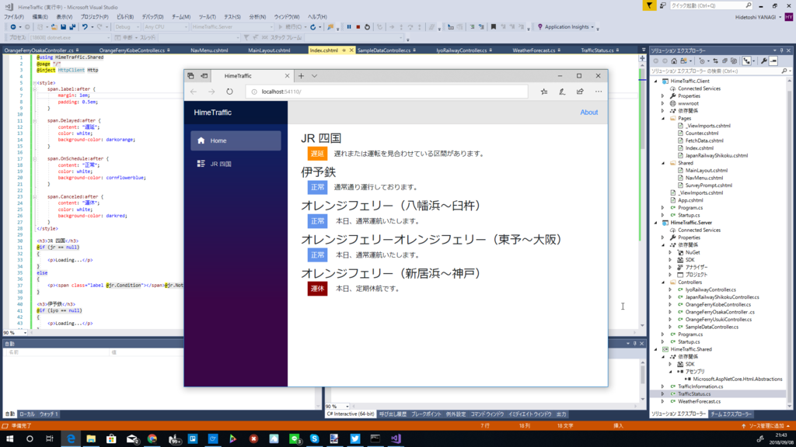
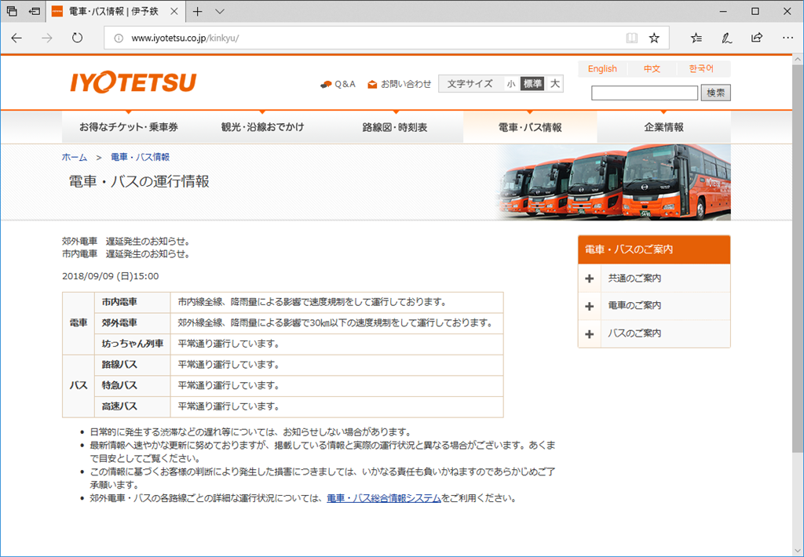

9月9日：大雨のおかげで遅延情報の収集がはかどった
公開日：

追加の無職の仕事を請け負ったので、この週末はお仕事モード。その合間、気晴らしに、昨日から取り組んでいる Blazor のサイトをちまちまと作ってた。
実は以前にもやったことがあるので、要領は得ている。
ただ、当時のコードが残ってなかったのと、3年もあれば変わるところもあるので、そこら辺の調査に手間取った。
JR 四国
遅延情報は公式の運行情報ページからとれる。うちのサイトにも路線図入れたいけど、Canvas に描いて、遅延路線をスタイルしていくのが汎用的だろうか。
伊予鉄
遅延情報は公式の運行情報ページからとれる。
遅延・運休があると路線ごとにテーブルで情報が掲載されるので、まずはテーブルのあるなしを判定するとよさげ。

テーブルの解釈は多少面倒くさいけど、隣接セレクタ― "th.rail3 + td" なんかを使えばいけるかと。
今日は大雨のおかげであちこちに遅延が出てくれて、たくさんデータが取れてよかった( *´艸｀)
フェリー
防予フェリーだけ UTF-8 じゃなくてつらかった。そのほかの各航路は、単純に公式ページからスクレイピングするだけ。オレンジフェリーのサイトだけ少し重く、うちの環境でベンチマークをとると取得から解析まで2秒ぐらいかかった。
ANA
公式の運行状況ページで便名を指定して検索。
裏で JSONP API を使っているので、それをそのまま使えばよい……が、情報過多なので解釈が少しつらい。
ちなみに JSON → C# への変換は、 https://quicktype.io/ が激しくお勧め。シリアライズ・デシリアライズするメソッド付きで C# 型へとコンバートしてくれる。
JAL/JAC
JAL - 運航状況のご案内（国内線） で便名を検索。あまりセンスのないテーブルをガリガリと解釈する必要があってすごくつらい。セレクターでやると body > table > tbody > tr:nth-child(2) > td:nth-child(3)みたいな感じ……ファック！
あと、JAL と JAC は別で、airlineCode を間違えるとエラーになる。
Jet Star
PC サイトは ASP.NET かな？ POST すると HTML が返ってきて……みたいな感じでつらい。でも、モバイル版サイトの裏には GET で簡単にとれる API*1があるみたい。JSON でデータをとれるし、ちょっと簡潔すぎるきらいはあるけど、データの見通しもいい。
Peach
公式サイトで便名のほかに出発地（！）、到着地（！？）まで厳密に入力して検索すると、POST で HTML をとってくる。あとはテーブルを解釈……。
昔のメモには API があると書いてあるんだが、どこなんだろう。なくなったのかな。